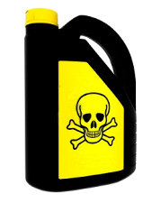
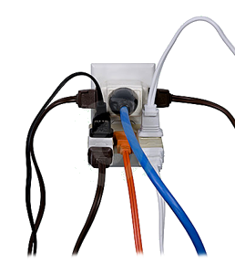
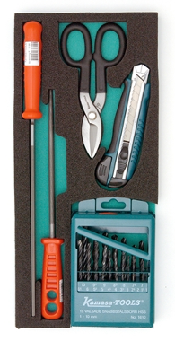
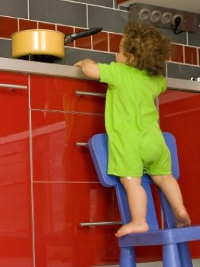
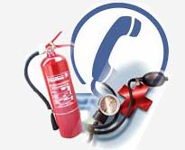

Normas para prevenir accidentes en el hogar
Dado que en el hogar es donde pasamos muchas horas a lo largo de nuestra vida, es allí donde también existen posibilidades de que surja algún accidente de cualquier tipo.
Sin embargo, no todos los miembros de la familia tienen las mismas posibilidades de sufrir un accidente.
Estadísticas muestran que hay dos grupos que son los que sufren accidentes con mayor frecuencia:
- Los niños menores de cinco años.
- Los ancianos mayores de sesenta y cinco años.
He aquí algunas sencillas normas que podemos seguir para evitar muchas de las lesiones y accidentes ocurridos en nuestro entorno:
1. ETIQUETE, ROTULE, MARQUE... identifique siempre los envases comunes que reutilice para almacenar solventes o venenos (tíner, kerosén, gasolina, isecticida, herbicidas, etc). Distíngalos del resto, si es posible retire la etiqueta original, para evitar confusiones.
2. SELECCIONE.... No guarde productos tóxicos en la cocina. Deje en el área de la cocina sólo los productos comestibles. Detergentes, insecticidas y otras sustancias tóxicas almacénelos en otro lugar.
3. USE BIEN... Si un envase fue utilizado para guardar objetos o sustancias tóxicas, NUNCA lo reutilice para almacenar alimentos.
4. REVISE... Verifique periódicamente las instalaciones de gas, agua y electricidad, y tome las previsiones si se percata o sospecha de alguna fuga, calentamiento o cortocircuito.
5. DISTRIBUYA LA CARGA... Evite sobrecargar los puntos de corriente eléctrica, especialmente con aparatos de alto consumo.
6. ALERTA... Esté pendiente de desenchufar aparatos que no esté utilizando, esto además de contribuir al ahorro energético evita accidentes.
7. CUIDESE... Tenga especial cuidado cuando manipule utensilios riesgosos, como ollas de presión, planchas, hornos, tostadoras, cafeteras, sartenes, cuchillos, rebanadoras, entre otros.
8. PRECAUCION... Mantenga el mago de ollas y sartenes hacia adentro para evitar posibles tropiezos.
9. PIDA AYUDA... Para transportar objetos voluminosos, aunque no sean pesados.
10. SENTIDO COMUN... Evite utilizar sillas o muebles para alcanzar objetos altos en vez de escaleras apropiadas.
11. PROTEJA... Aleje del alcance de los niños aquellos objetos que presenten superficies o aristas con filos (cuchillos, aspas de ventilador, trituradora, navajas o cartuchos de afeitar, agujas de coser o de punto, tijeras, etc.).
Así mismo aleje de los menores sustencias y artículos peligrosos (cigarrillos, encendedores, fuegos artificiales, solventes, fósforos, velas, medicinas, productos de limpieza, etc.).
12. SEA AMIGABLE... Para evitar mordeduras y arañazos debe tratarse adecuadamente a los animales domésticos.
13. VIGILE A LOS MAS PEQUEÑOS... Evite que los niños de corta edad jueguen y manipulen objetos pequeños o aquellos que puedan desmontarse en piezas pequeñas o no sean los recomendados para su edad.
Utilizar ropa de cama que imposibilite el estrangulamiento (evitar sábanas demasiado largas, camisones, prendas con cuellos estrechos, redes).
No dejar recipientes con agua cerca de los niños.
Provocar el eructo de los lactantes después de las comidas y antes de recostarlos para dormir.
14. CONTACTOS.... Mantenga actualizado y a la mano un directorio de teléfonos de emergencia y asegúrese de tenerlo siempre a la mano en un lugar conocido y accesible a todos los miembros de la familia.
* Material divulgado por Fundación Empresas Polar